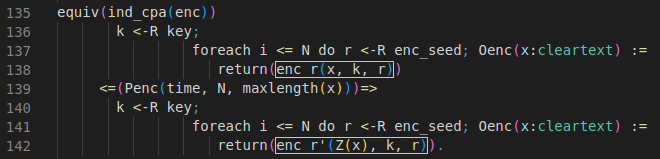
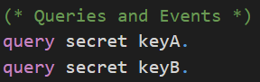

❓ Motivation
What is CryptoVerif?
CryptoVerif
is a tool for proving cryptographic protocols automatically in the computational model. It formalizes the
sequence of games
proving technique (often also called game hopping). CryptoVerif computes a bound on the advantage of an adversary. It is written in a specialized probabilistic process calculus language inspired by
pi-calculus.
CryptoVerif has an automatic mode, as well as an interactive mode.
Why you should learn about it
CryptoVerif can be used to prove secrecy, authentication, and indistinguishability properties of cryptographic protocols. You can use it, for example, to verify your handwritten proof and check for any human made mistakes.
Note that CryptoVerif cannot find attacks but the output of the failed proof may help you to derive an concrete attack on a protocol you considerd to be secure.
üîß Installation
ℹ️ This tutorial only shows how to install CryptoVerif and its requirements on Ubuntu.
It is also possible to run CryptoVerif under other Linux distributions and Windows.
For information take a look at the README file in the downloaded CryptoVerif folder.
Download CryptoVerif
CryptoVerif can be downloaded here. ​
- Click at the "Source" download link
- Scroll to the very bottom of the page and accept the terms
- Accept again in the popup window
- Download cryptoverif2.06.tar.gz to a location of your choosing
Install OCaml (4.03 or higher)
CryptoVerif requires OCaml version 4.03 or higher to be installed. The easiest way to install OCaml is to use its package manager opam.
add-apt-repository ppa:avsm/ppa
apt update
apt install opam
For CryptoVerif to work it is important to install the OCaml compiler as well.
After the execution of the first command you may be asked if you want to modify a file ~/.profile. You can answer with the default "N".
When asked if you want to add a hook, you can answer with the default "y".
opam init
eval $(opam env)
Check if the installation was successful with the following command.
ocaml -version
Install CryptoVerif
First, you need to uncompress the previously downloaded cryptoverif2.06.tar.gz.
tar -xzf cryptoverif.2.06.tar.gz
Build the programs using the following commands.
cd cryptoverif2.06
./build
Further, CryptoVerif requires the OCaml cryptographic library cryptokit to be installed.
opam install cryptokit
Test for successful installation
Let´s try to run CryptoVerif on an example protocol. You need to be in the directory cryptoverif2.06 where the executable cryptoverif is located, before executing the following command.
./cryptoverif examples/basic/pfdh.cv
Your result should end like this:

ℹ️ Having problems with the installation? Take a look at the README file in the downloaded CryptoVerif folder.
üìö First Proof
In this chapter we will have a look at a first proof using CryptoVerif. You will be guided to gather an understanding of how to work with CryptoVerif.
We will consider the Enc-then-MAC construction. Our goal is to show that Enc-then-MAC is IND-CPA secure, assuming the symmetric encryption is IND-CPA secure and the MAC is SUF-CMA secure.
Enc-then-MAC

The Enc-then-MAC construction works as follows.
- Encrypt the plaintext resulting in a ciphertext.
- Compute the MAC over this ciphertext.
- Concatenate the ciphertext and this MAC.
You can see a visualization of this construction on the right-hand side.
Input file
In this section we will build the input file for the proof together. CryptoVerif takes this file and tries to prove the queries we defined using the sequence of games technique.
ℹ️ Note that we will not strictly walk through every line of code from the top to the bottom. We will skip some lines for didactic reasons and explain them at the appropriate places.
Cryptographic assumptions
We start with the cryptographic assumptions we make for the cryptographic primitives used. In our case this is that the symmetric encryption is IND-CPA secure and the MAC is SUF-CMA secure.
CryptoVerif provides a library containing many standard cryptographic assumptions you can use (see docs/manual.pdf, Chapter 6). But you can also create your own assumptions.
You can see the code snippets for telling CryptoVerif that enc is IND-CPA secure and mac is SUF-CMA secure in the following.

Here the already in the default library default.ocvl defined macros IND_CPA_sym_enc and SUF_CMA_det_mac are expanded. For a better understanding we will discuss the technical side with the example of the IND_CPA_sym_enc marco.
First, let us inspect the meaning of the parameters of this macro.
- type of keys
- type of plaintexts
- type of ciphertexts
- encryption function
- decryption function
- function to inject the type bitstring to the type bitstringbot (The decryption returns either a bitstring (plaintext) or bottom (when the decryption fails). The type bitstringbot contains all bitstrings and bottom and is the return type of the decryption function.)
- function from bitstring to bitstring (This function models the leakage of the encryption. We usually interpret this as the leakage of the length of the plaintext.)
- probability of breaking the IND-CPA property
The functions enc, dec, injbot and Z are declared by the macro. It is important that they are not declared anywhere else. They can only be used after the macro has been expanded.
The types of keys, plaintexts, ciphertexts and the probability Penc must be declared before expanding the macro.
As you can see in the code snippet, the probability Penc is declared right before expanding the macro.
The types of plaintexts and ciphertexts are bitstring, a predefined type.
The type of keys is declared at the top of the input file, depicted in the following code snippet. There are also the type declarations for parameters for the macro SUF_CMA_det_mac.

The types are annotated with the lable [fixed] meaning that, for example, an encryption key is a bitstring of fixed length. Note that CryptoVerif does not need to know the specific length. Similar as it does not need to know the specific implementation of the symmetric encryption scheme or the MAC.
Note that it is possible to make an exact specification of the length to CryptoVerif.
Now we want to gain a better understanding of how CryptoVerif is doing game transformations. Once again, we will take the IND-CPA assumption as an example.
Let´s have a look at a code snippet from the macro IND_CPA_sym_enc in the default library default.ocvl depicted below.

This equivalence defines how the IND-CPA game hop looks like. CryptoVerif will look for code segments matching with the upper block (lines 136-138) and will replace them with the lower block (lines 140-142) to perform this game hop. If it does so, the probability stated in line 139 will be added to the bound of the advantage of an adversary.
Let´s compare the upper block (lines 136-138) with the lower block (lines 140-142) to see why this equivalence is suitable for the IND-CPA assumption.
We start with an uniformly random sampled encryption key k (line 136+140). The lines 137-138 and lines 141-142 are representing the encryption oracle using replication of the oracle Oenc. Oracles are defined by the usage of ":=".
ℹ️ Replication of oracles are used to indicate that an oracle can be executed multiple times. In the code snippet above the oracle Oenc is replicated N times. The variable N is no conrete value and the oracle is not indeed executed multiple times.
Both oracles Oenc take a cleartext x as input. But they differ in their output.
In the upper block the oracle returns the encryption of the cleartext x under the key k and the encryption seed r (line 138). This matches a regular encryption of cleartexts.
In the lower block the oracle does not encrypt the cleartext x but the leakage of the encryption Z(x) (line 142). For simplicity we will interpret the leakage of the encryption as the leakage of the lenght of the cleartext. We assume that Z(x) will return a bitstring with the same lenght as x consisting only of zeros.
This transformation matches the IND-CPA assumtion quite well as the ciphertexts cannot be used to gather any additional information about the cleartexts.
❗️ It is important that the requirements stated by this equivalence are strictly matched to perform this transformation.
If we assume that inside a game the seed r is chosen random outside of the replication and is reused for each encryption, then CryptoVerif is not allowed to perform this transformation as the requirements including the correct distribution for each variable are not matched.
Definition Enc-then-MAC
Further, we need to define how Enc-then-MAC works. Otherwise CryptoVerif would not know what the construction we try to prove looks like.
For the definition of the Enc-then-MAC construction we will need a function for concatenation. We are not interested in the concrete implementation of this function.
Therefore, we only declare the function using the keyword fun.
The keyword letfun is used when defining a function, i.e., giving a concrete implementation. We will use this one for the definition of the Enc-then-MAC encryption.
The declaration of the concatenation function is shown in the following.
The function concat takes parameters of type bitstring and macs and returns a variable of type bitstring. The annotation [data] indicates that this function is injective an its inverse can be computed efficiently.
Now that we talked about the concatenation function, we have everything we need to move on to the Enc-then-MAC construction. The definition of the Enc-then-MAC encryption is depicted in the following.

As we want to define the exact behaviour for the Enc-then-MAC encryption we use letfun for the definition of the function full_enc.
The function has three parameters that are needed.
First, there is the plaintext m of type bitstring. In CryptoVerif we consider plain- and ciphertexts as bitstrings. This means we consider cryptographic primitives (e.g. encryption) as mappings from bitstrings to bitstrings.
Further there are the encryption key k of type key, and the MAC key mk of type mkey.
We will use the encryption function enc declared inside of the macro IND_CPA_sym_enc to compute the encryption of the plaintext m under the encryption key k. This ciphertext is then stored inside the variable c1.
Next, we concatenate the ciphertext c1 with the MAC of the ciphertext c1 under the MAC key mk. This concatenation is the result of our Enc-then-MAC encryption function full_enc.
Note the difference between the usage of “;” and “.” in CryptoVerif.
Sequential execution is denoted by “;”. In the above code snippet you can see this in the line where c1 is set to the ciphertext. The semicolon indicates that there is a line of code following which should be executed afterwards.
The line with the concationation is the last expression belonging to full_enc. This block of code is ended with “.”.
Initial game to prove (including oracles)
Now we want to construct the initial game CryptoVerif should try to proof using the sequence of games. In our example this is the IND-CPA game. Note that for many games there are oracles the adversary has access to. Here, an encryption oracle from the IND-CPA game is required. We will start with this oracle before proceeding with the initial game.
The code of the encryption oracle is depicted below.

First, let's talk about the keyword let used for this oracle. With this the subprocess QencLR is defined. The code in this subprocess will be inlined inside the main process we will see later on. It is not required to do it this way. You can also put the whole code inside the main process where you need it. Using this approach you can structure your code for a lot better readability.
The encryption oracle is implemented as a left-or-right oracle. That means that the oracle receives two plaintexts in each query made by the adversary and always encrypts the left plaintext or always encrypts the right plaintext depending on the value of b.
Note the equivalency of IND-CPA and LoR-CPA.
The oracle Oenc we want to define should be callable by the adversary multiple times. We modelize this by oracle replication. The oracle can be called qEnc times. qEnc is just a parameter defined at the top of the input file and is not an actual number. The parameter is put into the bound of the advantage of the adversary at a corresponding game hop.
The adversary can make calls to the oracle. This modelizes the interaction between the adversary and the game.
The oracle Oenc takes two plaintexts m1 and m2 as input. As distinguishing ciphertexts of plaintexts with different leakage in the encryption is easy, the oracle should only respond with the ciphertext if the leakage of the received plaintexts is the same.
Remember: Interpreting the leakage of the encryption as the length of the plaintext this means that m1 and m2 should have the same length. This property is also refered to in many definitions of the IND-CPA assumption.
ℹ️ If-branches cannot be merged in CryptoVerif. This means that expressions that should be executed after the conditioned expression have to be put inside the matchBranch and the noMatchBranch.
The value of m0 is set to m1 or m2, depending on the bit b0. Then, we return the Enc-then-MAC encryption of m0 under the encryption key k and the MAC key mk.
As b0 is fixed for the left-or-right oracle, this means that we always encrypt m1 or always encrypt m2.
In our initial game we want to prove the secrecy of the bit b. We use the query depicted in the following to tell CryptoVerif what should be proven.
The initial game is displayed in the following code snippet.
In CryptoVerif the initial game is the main process. This is indicated by the keyword process. There can be only one main process.
Inside this process we define the oracle OStart. Here you will recognize how this oracle represents the initial game, to be more specific, the IND-CPA game.
The bit b is drawn as a random boolean value, being either 0 or 1. Further the keys are drawn random from their corresponding keyspaces. The encryption key k is uniformly random of type key. The MAC key mk is uniformly random of type mkey.
With the keyword run a subprocess can be executed. We run the previously defined subprocess QencLR with the random bit b, the random encryption key k, and the random MAC key mk as arguments. This subprocess contains the encryption oracle that can be called by the adversary against the IND-CPA game.
In the very last line there is no “.” as the file ends here.
Execute
The input file is now ready and we can execute CryptoVerif to let it try proof our query.
You can find the input file enc-then-MAC-IND-CPA.ocv
here.
When in the same directory as the executable cryptoverif you can run CryptoVerif on our created input file using the following command. (The presented input file already exists in the folder examples/basic.)
./cryptoverif examples/basic/enc-then-MAC-IND-CPA.ocv
Output
Let's have a look at the output of CryptoVerif and see how it proved the Enc-then-MAC construction IND-CPA secure under the given cryptographic assumptions.
CryptoVerif proves the secrecy of bit b in eight games. We will not talk about every game hop. When you take a look at the first game hops you will see that many game hops are of syntactic nature. Note that the first game is already inlined. Examples for syntactic game hops are expanding if statements or renaming variables.
We will take a closer look at the game hop where the assumption that the encryption scheme is IND-CPA secure is used. You can expand the IND-CPA game hop below.
Show IND-CPA game hop

In Game 4, the game before the IND-CPA game hop, you can see that besides some syntactic changes not much has changed compared to the initial game. The previous syntactic game hops are neccessary to fulfill the requirements to apply the IND-CPA equivalence. We talked about this equivalence in detail in the section Cryptographic Assumptions.
Depending on the value of bit b either the plaintext m1 or m2 is encrypted using the Enc-then-MAC encryption. For this game hop we will focus only on the part of the Enc-then-MAC construction where the plaintext m1 or m2 is encrypted using the encryption scheme enc. The plaintexts for this encryption are highlighted in the output of CryptoVerif.
As we told CryptoVerif that the encryption scheme is IND-CPA secure by expanding the corresponding macro, the defined equivalence can be applied here. As we have previously seen, the plaintext to be encrypted is replaced by the leakage of the encryption of this plaintext. Having a look at the highlighted parts in Game 5 you can see that this equivalence has been applied. Note that the equivalence has been applied twice, once for each branch of the if statement. This equivalence models the IND-CPA assumption.
We will now take a look at the last game hop and understand why the secrecy of bit b can be proven in the last game. You can expand the last game hop (Merging game hop) below.
Show Merging game hop

In the last game hop the branches of the if statement depending on the value of bit b are merged. This is possible as both branches are semantically equal.
First, in both branches a seed is sampled uniformly random. The ciphertexts c1 are generated by using the same encryption function, the same encryption key, and a uniformly random sampled seed. We have to take a look at the plaintexts that are used for the encryption. In the upper branch Z(m1) is encrypted while in the lower branch Z(m2) is encrypted. As Z models the leakage of the encryption both values are the same. The return statements are also the same in both branches. Therefore, the branches can be merged.
The bit b was only used in the if statement whose branches we merged with the last game hop. Therefore, it is quite trivial that the secrecy of bit b can be proven as it is not used anywhere in the game anymore.
In the following you can see that CryptoVerif proved the secrecy of bit b in game 8. You can also see the bound of the advantage of the adversary. In the last line it is stated that all queries have been proven. Therefore, the proof done by CryptoVerif is finished.

Only the games discussed before in detail are affecting the advantage of the adversary. For simplicity we will use the term "advantage in game X" when describing the "advantage regarding the secrecy of bit b in game X".
First, you can see that the advantage in game 1 is bounded by twice the probability defined by the IND-CPA equivalence (Penc) plus the advantage in game 8. The factor of two is because the equivalence has been applied twice in the IND-CPA game hop. Second, the advantage in game 8 is bounded by zero as the secrecy of bit b in game 8 is trivial as explained before.
These advantages are put together to form the final result advantage.
The advantage depends on some parameters like the length of the plaintexts or the time. CryptoVerif also defines the result time as the time of the relevant operations used.
TeX output
CryptoVerif also allows to write its output to a TeX file. You can see an example in the following.
mkdir tex
./cryptoverif -tex ./tex/enc-then-MAC-IND-CPA examples/basic/enc-then-MAC-IND-CPA.ocv
You can view the PDF with a TeX editor of your choice (e.g.
TeXstudio).
Alternatively, you can simply use an
Online LaTeX Editor
to display the PDF without any installation required.
üí° Challenges
Enc-and-MAC
In the first challenge we will consider the Enc-and-MAC construction. The assumptions on the cryptographic primitives are the same as in the chapter First Proof. The symmetric encryption is IND-CPA secure and the MAC is SUF-CMA secure.
Try to prove that Enc-and-MAC is IND-CPA secure using CryptoVerif. As you may already know that cannot be proven as attacks exist.
In this challenge you should inspect CryptoVerif´s output and understand why the sequence of games failed.
Note that CryptoVerif cannot find attacks. However, you should use CryptoVerif´s output to derive a concrete attack on the Enc-and-MAC construction.
The Enc-and-MAC construction works as follows.
- Encrypt the plaintext resulting in a ciphertext.
- Compute the MAC over the plaintext.
- Concatenate the ciphertext and this MAC.
You can see a visualization of this construction on the right-hand side.
❓ Don´t know how to proceed? Click here.
The input file is almost the same as enc-then-MAC-IND-CPA.ocv discussed in the chapter First Proof.
For this task you need to rewrite the defintion of full_enc to match Enc-and-MAC instead of Enc-then-MAC.
Show solution
Solution: Definition Enc-and-MAC
To rewrite the definition of the Enc-then-MAC encryption to the Enc-and-MAC encryption you need to change what the MAC will be computed over. For Enc-and-MAC we compute the MAC over the plaintext m.
Explanation: How the proof fails
In the IND-CPA proof for Enc-then-MAC presented in the chapter First Proof we saw that CryptoVerif was able to merge the branches depending on the value of b. This was possible as the expressions were semantically the same in both branches.
For the Enc-and-MAC construction this is not possible. When you have a look at the highlighted parts in the CryptoVerif output below, you will see that in the upper branch the MAC is computed over the plaintext m1 and in the lower branch over the plaintext m2. This prevents merging those branches. At this point CryptoVerif does not find another way to prove the secrecy of b.Solution: Derive attack on Enc-and-MAC
Now we want to use the output of the failed CryptoVerif proof to derive an attack against Enc-and-MAC.


Enc-then-MAC IND-CCA2
In the second challenge we will consider the
Enc-then-MAC
construction again. The assumptions on the cryptographic primitives are the same as in the chapter First Proof. The symmetric encryption is IND-CPA secure and the MAC is SUF-CMA secure.
Your goal is to prove that Enc-then-MAC is then
IND-CCA2
secure using CryptoVerif.
You can orientate yourself on the input file enc-then-MAC-IND-CPA.ocv presented in the chapter First Proof. You may require to have a look at hints 4 and 5 as they contain CryptoVerif syntax not captured in this tutorial beforehand.
❓ Need any hints? Click here.
üí° Hint 1
Consider the differences between the IND-CPA game and the IND-CCA2 game. What is new?
üí° Hint 2
The IND-CCA2 game requires a decryption oracle.
Did you tell CryptoVerif how the Enc-then-MAC decryption looks like?Solution: Decryption Enc-then-MAC
üí° Hint 3
The IND-CCA2 game requires a decryption oracle.
Did you add the decryption oracle? You can orientate yourself on the encryption oracle presented in the chapter First Proof.
Note that you should not implement the decryption oracle as a left-or-right oracle.üí° Hint 4
Did you remember to exclude how any adversary can trivially win the IND-CCA2 game?
You may use tables in CryptoVerif to do so. Check the syntax of tables in CryptoVerif below.CryptoVerif Syntax: Tables
üí° Hint 5
In the IND-CCA2 game the adversary can access the encryption oracle and the decryption oracle. The adversary can choose the order he makes requests to the oracles but in CryptoVerif only one oracle can be called at a time.
Check the syntax of parallel composition of oracles in CryptoVerif below.CryptoVerif Syntax: Parallel composition of oracles


Show solution
Solution: Decryption Enc-then-MAC
The Enc-then-MAC decryption function full_dec has three parameters. It requires the ciphertext c of type bitstringt, the encryption key k of type key, and the MAC key mk of type mkey.
First, it separates the ciphertext c of the Enc-then-MAC encryption back to the “regular” ciphertext c1 and the MAC mac1. If the ciphertext c was of incorrect format and therefore could not be split into c1 and mac1, the function returns bottom.
Then, it is checked whether the MAC mac1 is valid. This is done by calling the verification function verify providing the ciphertext c1, the MAC key mk, and the MAC mac1 as parameters. If the verification succeeds, the decryption of the ciphertext c1 under the decryption key (same as the encryption key) k is returned. If the verification fails, the function returns bottom.Solution: Enc and Dec oracle (exclude trivial win)
The encryption oracle QencLR is almost the same as in the IND-CPA proof presented in the chapter First Proof. As we need to give an adversary access to a decryption oracle, we require to prevent that an adversary can win the IND-CCA2 game trivially. That is excluding that an adversary can send a ciphertext produced by the encryption oracle directly to the decryption oracle.
We do this by keeping track of the outputed ciphertexts in a table. First, we create a table called ciphertexts which can contain elements of the type bitstring. Inside the oracle Oenc we will insert the generated ciphertext c0 into the table.The decryption oracle Qdec has two paramaters. It requires the encryption key k of type key and the MAC key mk of type mkey. Similar to the encryption oracle we use oracle replication for the decryption oracle as well. The oracle Odec takes a ciphertext c as input. Note that the decryption oracle is not a left-or-right oracle, so we do not have inputs like c1 and c2. We check if the ciphertext c, queried by the adversary, is inside the table ciphertexts and has thereby been outputed by the encryption oracle earlier. If this is the case the function returns bottom. Otherwise the Enc-then-MAC decryption is returned.
The parameters qEnc and qDec used for the oracle replication are declared at the top of the input file.
Solution: Initial Game
The initial game is almost the same as the initial game for the IND-CPA game presented in the chapter First Proof. The only difference is that the adversary has access to a decryption oracle additionally. We achieve this by running both oracles in parallel composition (check Hint 5).


Take a look at the last game and convince yourself that the secrecy of b can be proven in Game 14.
Show last game

üìù Self-Study
In this chapter you are welcome to have a look at how CryptoVerif proves the authenticated key exchange protocol signed Diffie-Hellman secure in a multi-party, multi-session environment.
We will not have an in-depth look at every line of the input file as in the chapter First Proof. You will recognize many similar structures. We will have a look at some code snippets discussing the most important differences.
One interesting aspect, for example, is how CryptoVerif excludes malicious accepts.
Further, in this proof you can see how CryptoVerif can be guided through the proof (interactive mode).
You can find the input file signedDH.ocv here.
Secrecy of session key
The queries to prove secrecy of to session key keyA and keyB have the same syntax as we have seen before to prove the secrecy of bit b.

The difference here is that the values of keyA and keyB are depending on the messages the communicating parties have sent each other (key agreement).
We only want to prove secrecy in case the two honest parties A and B interacted. There is a problem where another party besides B can communicate with party A and trivially know the agreed key. Because of this you can see a little trick in the following code snippet. The value of the agreed key is stored in kA at first. Only if the other party is B then the value of keyA is set to kA. Otherwise, kA will be directly leaked.

Events
talk about events
trigger: "record event"
In CryptoVerif we can also use events. You can see the declaration of the events endA, beginB, and endB in the following. They also have parameters of the given types associated to them.


From the code depicted above you can also understand that the single messages of a protocol are defined as oracles in CryptoVerif.
Exclude malicious accept
talk about query using events (exclude malicious accept)
Now we want CryptoVerif to proof that a malicious accept is not possible. For this we write queries using the events endA, beginB, and endB shown in the previous section.

In the upper query we want to prove that for each event endA there exists one distinct event beginB with the same parameters. This should be proven even if the shared secrets keyA and keyB are leaked. We indicate this using the keyword public_vars.
To be more precise, when this query is proven it means that party A can authenticate party B, even if any shared secrets leaks.
The lower query is the other way around. We want to show that B can authenticate A, even if any shared secret is leaked. For each event endB there exists one distinct event endA with the same parameters.
Interactive mode
talk about interactive mode (guided)
refer back to IND-CPA equivalence (use ind_cpa(enc) in interactive mode)

ℹ️ Note that CryptoVerif is also able to prove the Signed DH protocol in automatic mode.